Promouvoir, sensibiliser et contribuer à la recherche en études stratégiques.
ORACLES est une association qui forme à la recherche, accompagne les étudiants dans la production de travaux et développe des outils au service de la recherche et de la décision publique.

Notre mission
Promouvoir
Faire connaître les études stratégiques comme champ de recherche à part entière et valoriser les travaux de jeunes chercheurs.
Sensibiliser
Rendre accessibles les grands enjeux de sécurité et de défense, les méthodes de la recherche et la lecture critique de l'actualité internationale.
Contribuer
Produire des travaux rigoureux, des fiches de lecture, des entretiens et des outils utiles à la recherche comme à la décision publique.
Ce que nous proposons
Quatre rubriques complémentaires, du travail de recherche à l'outil d'analyse, pensés pour apprendre en produisant.
Articles
Travaux originaux d'étudiants et de chercheurs, et revues d'actualité internationale.
Chronologie des crises
Le déroulé détaillé d'une crise, phase par phase, avec ses acteurs.
Méthodes
Comparer les méthodes de recherche pour choisir la plus adaptée à sa question.
État de la littérature
Carte interactive : fiches de lecture et entretiens avec des chercheurs, classés par zone.
Dernières publications
Tous les travauxVous souhaitez rejoindre ORACLES ?
Étudiant, chercheur ou simple curieux : écrivez-nous pour rejoindre l'association ou collaborer avec elle.